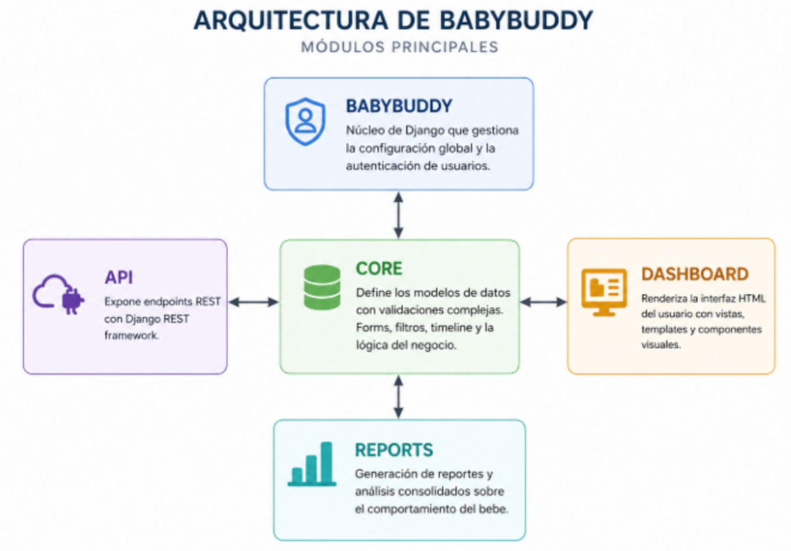
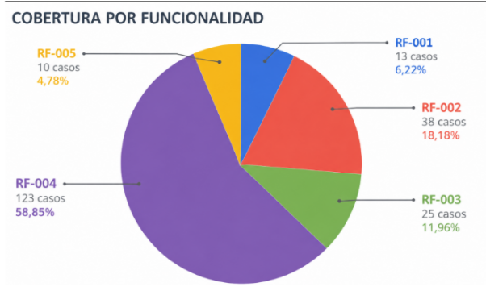
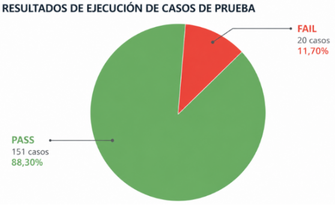
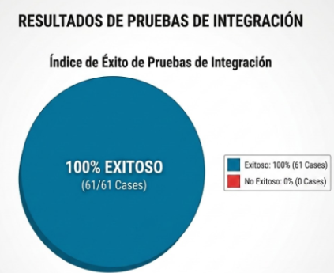

Resumen del Proyecto
El equipo ESCARABAJO realizó la evaluación integral de BabyBuddy, una plataforma de código abierto para el seguimiento del cuidado infantil. Se implementó una estrategia ágil dividida en sprints, abarcando desde análisis estático y pruebas unitarias hasta pruebas funcionales, de integración, de sistema y de aceptación automatizadas en la nube.
209
Casos Funcionales Diseñados
100%
Éxito en Integración (61/61)
100%
Éxito en Sistema (26/26)
100%
Éxito E2E Aceptación (21/21)
Arquitectura del Caso de Estudio
El sistema se compone de 5 módulos principales desarrollados en Django (Core, Reports, Dashboard, API y BabyBuddy). A continuación se ilustra la arquitectura de la aplicación y su despliegue:

Metodología y Cronograma
Hito 1: Planificación (Sprint 1)
Configuración del entorno en GitHub (Projects, Issues, Wiki y Actions) y diseño del Plan de Pruebas Unitarias.
Hito 2: Pruebas Funcionales (Sprint 2)
Diseño mediante técnicas de caja negra (partición de equivalencia y valores límite). Ejecución de 171 escenarios manuales con 88.3% de tasa de aprobación.
Hito 3: Automatización y Despliegue (Sprints 3 y 4)
Pruebas de Integración (API REST), Pruebas E2E de Sistema y Aceptación con Playwright + Chromium, y validación no funcional en Render.
Resultados y Cobertura de Pruebas
Durante la evaluación funcional y de integración se generaron métricas detalladas para la cobertura de requerimientos y la efectividad de ejecución:


En la fase de pruebas de integración para la API REST, se obtuvo un cumplimiento total en todos los endpoints evaluados:

| Nivel de Prueba | Herramienta / Enfoque | Ejecutados | Exitosos | Estado |
|---|---|---|---|---|
| Pruebas Funcionales | Caja Negra / Manual | 171 | 151 (88.3%) | Completado |
| Integración (API) | Playwright (HTTP) | 61 | 61 (100%) | Exitoso |
| Pruebas de Sistema | Playwright / Chromium | 26 | 26 (100%) | Exitoso |
| Aceptación (E2E) | Playwright / Pytest | 21 | 21 (100%) | Exitoso |
Pruebas No Funcionales (k6 & Python)
Rendimiento y Carga
Evaluación bajo tráfico concurrente en Render utilizando k6:
- Load Test (100 VUs): Latencia p(95) de 2.38s.
- Spike Test (200 VUs): Latencia p(95) de 7.65s.
- Disponibilidad: 100% de peticiones procesadas sin caídas (0.00% tasa de error).
Seguridad y Mitigación
Verificación mediante scripts automatizados en Python:
- Inyecciones (SQLi/XSS): Bloqueadas exitosamente (HTTP 403).
- Fuerza Bruta: Control de tasa activo (HTTP 429).
- Defecto Identificado: Enrutamiento a rutas inexistentes retorna HTTP 500 en lugar de 404.
Equipo de Trabajo (ESCARABAJO)
Universidad Nacional de San Agustín - Arequipa, Perú